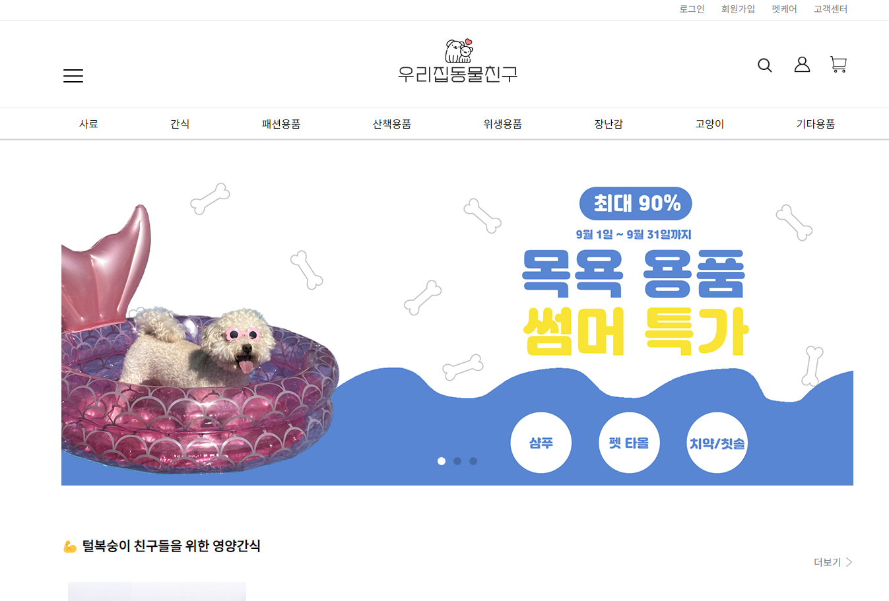
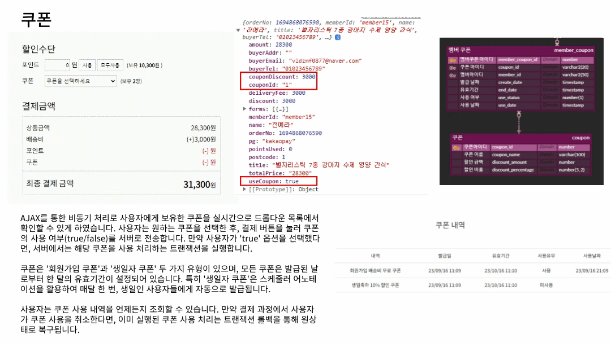
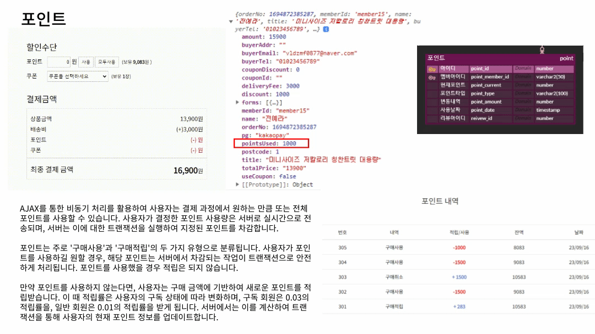
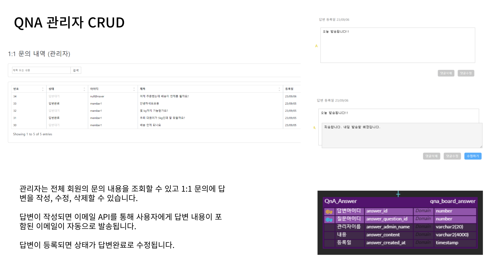

안녕하세요! 함께 일하고 싶은백엔드 개발자 전예라입니다.
요즘엔 새로운 과제에 끊임없이 도전하고 문제를 해결하는 것에 재미를
느끼는 중입니다.
- 꾸준함의 가치를 알기에 매일 1회 이상의 커밋을 실천하고 있습니다.
- 코드 작성에 있어서 효율성을 고려하며, 지속적으로 개선하는 것을 중요하게 생각합니다. https://hoducute.tistory.com/ 현재는 데이터베이스 성능 개선을 하고 있습니다.
- 사회성이 정말로 좋습니다. 둥글둥글하고 원만한 성격으로 동료와의 원활한 커뮤니케이션이 가능합니다. 최근 프로젝트에서는 PL 역할을 맡아서 의견 조율과 일정 관리를 하고 기술적인 문제를 해결했으며, 이를 통해 팀원들로부터 '협업 능력이 뛰어나다’라는 긍정적인 피드백을 받았습니다.
- 회계 분야에서 5년 근무하는 동안 회계 프로그램을 다루면서 느꼈던 불편한 점들을 해결하기 위해, 프로그램을 직접 만들어보고 싶었습니다. 그래서 시간이 더 지나기 전에 개발자로서의 새로운 길을 선택하게 되었습니다.
TECH STACK
PET SHOPINGMALL
우리집동물친구 (SpringBoot, 7인)

✅ 프로젝트 설명
반려동물 물품 판매를 중심으로 한 온라인 쇼핑몰입니다. 반려동물 관련 사업은 지속적으로 성장하고 있습니다. 팀원 중에서도 반려동물을 키우는 팀원이 반 이상이었기에 "반려동물 쇼핑몰을 만들면 어떨까?"라는 아이디어에서 시작하였습니다.
◾ 팀 일정 관리 및 조율 - 팀장의 보조 역할을 하며 프로젝트를 기한 내에 완료할 수 있도록 일정을 관리하고 팀원들 간의 작업을 조율했습니다. 일정 관리를 위해 노션을 활용해서 하루에 두 번 작업 상태를 확인하며, 각 팀원에게 적합한 업무를 할당했습니다.
◾ 팀원들의 작업 지원 및 도움 - 팀원들이 기능 구현에 어려움을 겪을 때 코드 리뷰를 통해 문제점을 발견하고 해결책을 제시했습니다. 한 번의 경우에서는 팀원이 데이터베이스 연동에 어려움을 겪었습니다. 이때, 제가 코드 리뷰를 진행하며 N+1 문제를 발견했고, 쿼리 최적화 방안을 제시하여 해당 기능의 효율성을 향상 시켰습니다.
◾ 웹 디자인 및 세부적인 CSS 작업 - 전체적인 디자인과 세부적인 css를 맡았습니다.
✅ 구현한 기능
◾ 쿠폰 (사용, 조회, 발급, 취소)
- 사용자가 원하는 쿠폰을 선택한 후 결제 버튼을 누르면 쿠폰의 사용 여부를 (true/false) 서버로 전송합니다. 쿠폰은 ‘회원가입 쿠폰’과 ‘생일자 쿠폰’ 두 가지 유형이 있으며 발급 된 날로부터 한 달의 유효 기간이 설정되어 있습니다. ‘생일자 쿠폰’은 스케쥴러 어노테이션을 활용하여 매달 한 번 발급됩니다. 결제를 취소한다면 이미 실행된 쿠폰 사용 처리는@Transactional을 통해 원래 상태로 복구됩니다.
◾ 포인트 (사용, 조회, 적립, 취소)
- 사용자는 결제 과정에서 원하는 만큼 또는 전체 포인트를 사용할 수 있습니다. 사용자의 포인트 사용량은 AJAX를 통해 서버로 전송되며, 서버는 이에 대한 트랜잭션을 실행하여 사용한 포인트를 차감합니다. 사용자가 포인트를 사용했을 경우에 적립이 되지 않으며, 포인트를 사용하지 않는다면 구독 회원은 3%, 일반 회원은 1% 적립을 받게 됩니다.
◾ 회원가입 인증 이메일 API
- 회원가입 과정에서 이메일 주소를 입력하고 ‘이메일 인증’ 버튼을 클릭하면 AJAX를 통해 이메일 정보가 서버로 전송됩니다. 서버에서는 UUID를 이용해 토큰을 생성하고, 이메일을 사용자에게 발송합니다. 사용자가 이메일의 ‘인증하기’ 버튼을 클릭했을 때 토큰이 일치하면 정보가 세션에 임시로 저장됩니다.
◾ 답변 전송 이메일 API
- 1:1 문의에 대한 관리자의 답변이 등록되면 해당 내용을 담은 이메일이 회원에게 자동으로 발송됩니다.
◾ Q&A 회원/관리자 CRUD
- 게시판/댓글 작성, 조회, 수정, 삭제가 가능하며 파일첨부와 파일 다운로드가 가능합니다. 이미지 조회는 별도의 이미지 매핑 테이블을 사용했고 복잡한 참조 관계와 높은 의존성 문제를 해결했습니다.
◾ 이용약관
- 회원가입을 할 때 이용약관 동의가 필수적으로 이루어지며, 동의 정보는 데이터베이스에 저장됩니다.
✅ 프로젝트를 통해서 배운 점
◾ 프로젝트 관리 경험 - 이번 프로젝트에서는 처음으로 PL의 역할을 수행해보았습니다. 기존에는 주로 팀원 역할을 하다가, 이번에는 팀원들의 질문에 응답하고, 작업을 조율하는 등의 새로운 역할에 도전했습니다. 이 과정이 생각보다 복잡하고 어려웠지만, 많은 배움과 성장을 얻을 수 있었습니다.
◾ 데이터베이스 성능 최적화 - 조회 쿼리문을 개선하여 6초 → 0초대로 줄이면서 데이터 조회 시, DTO의 효율적 설계와 SQL 쿼리 작성 방법이 전체 시스템 성능에 결정적인 영향을 크게 미칠 수 있다는 것을 깨달았습니다.
◾ 효율적인 데이터 조회 방법 - 기존에는 직접 테이블을 참조하는 방식을 사용했으나, 이번에는 매핑 테이블을 통한 효율적인 데이터 조회 방법을 배웠습니다.
◾ Mybatis 활용 능력: - Mybatis의 resultMap과 Collection 기능을 활용해, 더욱 복잡하고 세밀한 데이터 매핑을 수행할 수 있게 되었습니다.
COUPON

POINT

EMAIL API
QNA 회원 CRUD
QNA 관리자 CRUD

TROUBLE SHOOTING
1. 다대다 관계를 처리하기 위한 이미지 매핑 테이블 설계
💦 문제 상황
초기 설계에서는 image_attachment 테이블이 question_id를 참조하도록 하였습니다. 그러나 후에 이 테이블이 review, product, cart 등 다양한 테이블에서도 활용되어야 함을 인지하였습니다. 이러한 설계 방식은 참조 관계가 복잡해지고, 의존성이 높아져 유연성이 떨어진다는 문제점이 있습니다.
🔅 해결 방안
참조를 기반으로만 작업을 해 왔기 때문에, 매핑 테이블을 사용하는 것은 처음이었습니다. 트랜잭션 처리를 이용하여 insertQuestion ServiceImpl에서 먼저 질문을 데이터베이스에 저장했습니다. 그 후에 이미지 파일을 데이터베이스에 저장하고, 마지막으로 questionId와 imageId를 이미지 매핑 테이블에 등록하였습니다. 이러한 작업 절차를 통해 참조 없이도 원하는 이미지를 불러올 수 있게 되었습니다.
📝 배운 점
이미지와 다른 엔티티 간의 관계를 효과적으로 처리하기 위해 매핑 테이블의 설계와 활용 방법을 습득하였습니다. 이 과정을 통해 데이터 모델링과 관계형 데이터베이스 설계에 대한 이해도가 상승하였습니다.
DTO 및 resultMap 활용: 이미지와 관련된 데이터를 가져올 때 DTO 및 resultMap을 사용하여 데이터의 가공 및 조작하는 방법을 연습했습니다. 이를 통해 데이터베이스 조회 결과를 원하는 형식으로 변환하고 활용하는 능력을 키울 수 있었습니다.
2. 서블릿에서 웹소켓을 적용시키는 방법
💦 문제 상황
SpringBoot와 달리 Servlet에서 웹소켓을 사용한 자료를 많이 찾을 수 없었습니다. 웹소켓을 처음 해보는 데다 자료도 많이 없었고, 특히 다대다 채팅이 아닌 1:1 채팅이어서 구현하는 데 많은 어려움이 겪었습니다.
🔅 해결 방안
최대한 자료를 찾아보면서 웹소켓을 이해하려는 공부를 위주로 했습니다. 웹소켓이 뭔지, 왜 사용하는지, 어떻게 사용하는지, 1:1 채팅방을 만드려면 어떻게 해야하는지, 세션이 뭔지 등을 공부하다보니 자연스레 구현을 할 수 있게 되었습니다.
📝 배운 점
웹소켓의 양방향 통신을 이해하게 되었습니다. HTTP와는 다르게 지속적인 연결을 유지하며 양방향 통신을 지원하는 프로토콜이며 이를 통해 실시간 통신이 가능합니다.
또한 엔드포인트를 등록하고 관리하는 방법을 익힐 수 있었고, 1:1 채팅 기능을 구현하는 과정에서 어떻게 메세지를 보내고 받는지, 세션 관리 및 인증과 같은 측면도 이해하게 되었습니다.
REVIEW
프로젝트를 마치며
이 프로젝트에 참여하면서 제가 세운 목표는 두 가지였습니다. 하나는 로직을 구현하는 연습을 하고, 둘째는 팀원들과 원활하게 소통하는 것이었습니다.
데이터의 일관성을 유지하는 것은 포인트와 쿠폰 로직 구현에서 특히 중요했습니다. 이를 위해 저는 Spring Framework의 @Transactional 어노테이션을 이용하여 데이터베이스 트랜잭션을 관리하였습니다.
주문 완료 처리, 포인트 사용 처리, 쿠폰 사용 처리, 그리고 포인트 적립 처리 등 다양한 데이터베이스 작업을 한 번의 트랜잭션에서 처리합니다.
만약 작업 중 하나라도 실패한다면, @Transactional 어노테이션 덕분에 진행되었던 모든 데이터베이스 작업이 롤백되어 데이터의 일관성을 보장하게 됩니다.
또한 프로젝트를 진행하면서 특히 실시간 협업 도구의 중요성을 명확히 깨닫게 되었습니다. 노션을 활용한 일정과 작업량의 체크, 그리고 Git을 통한 코드의 버전 관리는 팀원 모두가 상태를 실시간으로 파악하고 효율적으로 작업할 수 있게 만들어주었습니다.
빠듯한 일정을 관리하기 위해 노션을 활용하여 하루에 두 번씩 작업량을 체크했습니다. 이 과정에서 특정 팀원이 기능 구현에 어려움을 겪는 것을 발견했을 때에는 코드 리뷰를 진행하여 문제점을 찾아 해결책을 제시했습니다. 특히 한 번의 경우에서는, 팀원이 데이터베이스 연동에 문제를 겪고 있어 제가 코드 리뷰를 통해 N+1 문제를 발견하고 쿼리 최적화 방안을 제안하여 해당 기능의 효율성을 크게 향상시켰습니다.
프로젝트가 완료된 후에도 지속적인 향상을 목표로 하고 있습니다. 특히 데이터베이스 성능을 최적화하기 위해 뷰, 인덱스를 적절히 활용할 계획입니다. 현재 스터디 중에 있습니다.
이번 프로젝트를 통해 얻은 경험과 지식은 쉽게 얻을 수 없는 뜻깊은 경험이라고 생각합니다. 특히 팀원들과의 원활한 의사소통과 협업을 통해 문제 해결 능력을 향상시킬 수 있었고, Spring Framework와 데이터베이스 관리 등의 기술적인 측면에서도 많은 것을 배울 수 있었습니다. 앞으로도 이러한 경험을 기반으로 지속적인 성장을 추구하며 새로운 도전을 이어나갈 계획입니다.
OTHER PROJECTS
털뭉치들 (Servlet, 5인)
✅ 프로젝트 설명
유기견과 유기묘를 입양할 수 있는 플랫폼을 제공하는 입양 사이트입니다. 2022년 기준으로 약 11만 2천 마리의 유기동물이 발생했음을 감안하여, 이들에게 새로운 가정을 찾아주고자 시작된 프로젝트입니다. 펫샵 대신 유기동물 입양을 선택하게끔 사람들을 유도함으로써, 유기동물 문제를 해결하는 것이 주 목적입니다.
◾ Back-End 개발: 기능 구현 및 데이터베이스 설계
◾ 팀원들의 작업 지원 및 도움: 팀원들을 보조하며 질문을 받아주는 역할을 했습니다.
◾ 웹 디자인 및 세부적인 CSS 작업
✅ 구현한 기능
◾ 웹소켓을 이용한 1:1 채팅
- 회원이 채팅 버튼을 누르면 웹소켓이 실행되고 관리자가 입장하게 됩니다. 회원마다 고유의 채팅방이 만들어져서 관리자와의 1:1 채팅이 가능합니다. 채팅을 종료할 때는 모든 채팅이 데이터베이스에 저장됩니다. 또한 다음에 채팅을 할 때 채팅방에서 기존 채팅 내역을 볼 수 있습니다.
◾ 채팅 기록 조회
- 회원은 자신의 모든 채팅 목록을 볼 수 있으며 관리자는 모든 회원의 채팅 목록을 볼 수 있습니다.
◾ 회원 목록 조회
- 관리자는 모든 회원 목록을 볼 수 있고, 회원 검색도 가능합니다.
✅ 프로젝트를 통해서 배운 점
◾ 웹소켓 사용 : 웹소켓을 처음 사용해봤는데 웹소켓의 양방향 통신에 대해서 자세히 알 수 있게 되었습니다. 이를 통해 실시간 채팅과 같은 기능을 더 원활하게 구현할 수 있었습니다.
◾ 프로젝트 경험: 이전에는 1인 프로젝트만 진행해봤지만, 이번에는 다인 프로젝트를 통해 팀원들과의 협업과 커뮤니케이션의 중요성을 깨달았습니다. 의견 조율과 작업 분배, 일정 관리 등 다양한 협업 스킬을 경험하고 배울 수 있었습니다.
◾ 의사소통과 협업: 프로젝트를 진행하면서, 팀원들과의 의사소통이 원활하지 않을 경우 프로젝트의 효율성과 작업을 진행하는 데 큰 영향을 미칠 수 있다는 것을 체감했습니다. 이를 통해 더 효과적인 커뮤니케이션 방법과 문제 해결 능력을 키울 수 있었습니다.